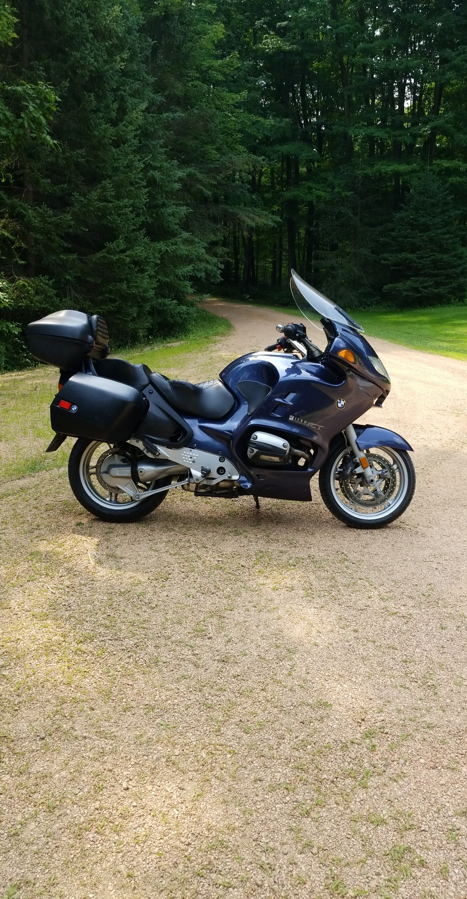

General Info
Motorcycling refers to the activity of riding a motorcycle, which is a two-wheeled motorized vehicle. It involves balancing the bike while operating its controls, which typically include a throttle, brakes, and gears. Motorcycling can be a mode of transportation, a recreational activity, or a competitive sport. It requires riders to have good physical coordination, balance, and reflexes, as well as knowledge of traffic laws and safe riding practices. Motorcycling can be enjoyed solo or in groups, and can provide a sense of freedom and adventure for those who participate.
This website has info on:
- BMW
- Harley Davidson
- Honda
Topics:
- Common Features:
- Information on common features of the motorcycles, such as engine type, fuel efficiency, and safety features.
- Years:
- Details on the different years of motorcycles produced by each brand, including changes made to models and notable events in the brand's history.